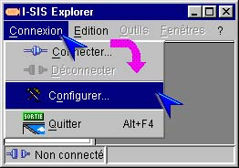
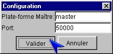

I-SIS Explorer

Guide d'utilisation
|
|
I-SIS Explorer |
|
|
Guide d'utilisation |
||
Au tout premier démarrage de I-SIS Explorer (cf. «Lancer le I-SIS Explorer», vous êtes invité à le configurer pour sa connexion au I-SIS Portail,
Validez le message affiché, et suivez les instructions de configuration (cf. «Configurer le I-SIS Explorer»).

Assurez-vous que le I-SIS Explorer est ouvert et déconnecté (cf. «Fermer la fenêtre d'identification» et «Se déconnecter»),
Le I-SIS Explorer étant ouvert et non connecté, cliquez "Connexion" sur la barre de menu,
Puis cliquez "Configurer..." et suivez les instructions de configuration (cf. «Configurer le I-SIS Explorer»).

La fenêtre de configuration affichée (cf. «Préparer la première configuration» et «Préparer une reconfiguration»), saisissez le nom d'hôte et le numéro de port du I-SIS Portail, retenus pour la communication I-SIS,
Validez votre saisie en cliquant le bouton "Valider".

Copyright © 2003 BV Associates. Tous droits réservés.